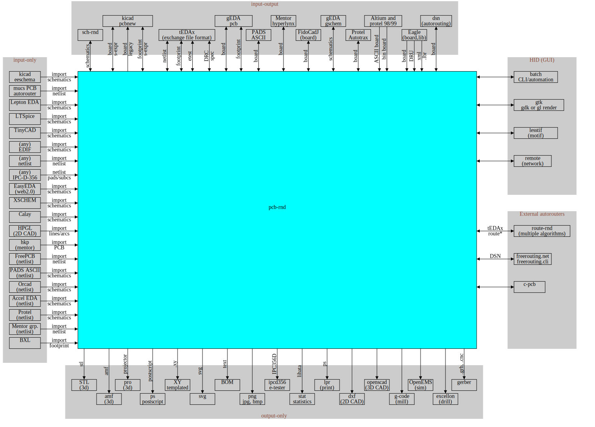

Pcb-rnd enables the user to design complex original boards in a standard EDA flow with netlists and other data inputs that aide in design. pcb-rnd also acts as a multiuse layout design CAD, opening board designs saved in a variety of legacy and contemporary software.
The user can import a variety of non-layout data sources commonly used in EDA flow. Schematics from gschem or kicad, netlists, reference images, tinyCAD, and more are available to the user.
pcb-rnd can edit a single board at a time. To edit multiple boards, open multiple instances of pcb-rnd.
Buffers are board-independent: they have their own dynamic size and their own virtual layer stack. These enable buffers to act as a proxy between different boards with different properties.
The following operations can be done with buffers:
A footprint library is a collection of subcircuit files, optionally equipped with metadata. A footprint library is stored and accessed by footprint plugins (whose names are conventionally prefixed with fp_). Where the actual data is stored, how and when it is retrieved depends on the fp_ plugin.
There is a configuration node called rc/library_search_paths which is a list of footprint library search paths. How each path is interpreted also depends on the fp_ plugins.
Currently pcb-rnd offers the following fp_ plugins:
| plugin | description | library_search_paths example |
|---|---|---|
| fp_fs | list and load files from directories on the host file system | ~/my_lib /usr/lib/company_lib $(rc.path.share)/pcblib |
| fp_board | extract all footprints from an existing board file (given in any board format pcb-rnd can load) and use these footprints as a library | board@/home/joe/ee/control/cpu.lht |
| fp_wget | download a digested map of a footprint library from a web server, using wget; make all footprints and metadata available in the library but do not immediately download footprint files; keep a local (host file system) cache of footprints accessed. Currently supports edakrill and gedasymbols. | wget@edakrill wget@gedasymbols |
There are two types of footprints:
A static footprint is a data file that is loaded and parsed by one of the io_ plugins. pcb-rnd supports multiple file formats: the native lihata subcircuit format, kicad, eagle, gEDA footprints.
A parametric footprint is an external program or script that is executed by pcb-rnd. The external program shall write a valid footprint file to its standard output, which is then parsed and used the same way as in case of static footprints. The external program gets a list of parameters extracted from the footprint name by pcb-rnd.
The basic syntax for a parametric footprint is name(arg1, arg2, ... argN). Any footprint name that contains a '(' is treated as parametric. The list of arguments is separated by commas. How arguments are interpreted, e.g. whether the are positional or named or both, is up to the external parametric footprint program.
The footprint programs are stored in the library tree, and are accessed using the fp_ plugins. There is no limitation on how the program is implemented other than the host operating system on which pcb-rnd runs has to be able to execute it.
pcb-rnd operates on an in-memory data tree of the board while it is being edited. The in-memory data tree can not be dumped in a file without conversion: loading any file means converting the given file format to the in-memory representation and saving from memory to any file format is just another conversion.
Lossless save/load round trips for all pcb-rnd features are guaranteed only when using the latest version of the native formats. The reason is that the native formats are always upgraded to support all features of the in-memory data model. It is possible (but not recommended) to use older versions of the native formats to retrain compatibility with older versions of pcb-rnd.
The native file formats of pcb-rnd are:
Non-native file formats are called alien formats. pcb-rnd supports a large variety of alien formats, but lossless save/load round trips are not guaranteed when alien formats are used. The code will always do its best to get good results, but different alien formats have different features, and most of them can not fully capture all features pcb-rnd offers.
Some alien formats are implemented as io_ plugins and are accessible as normal board (and footprint) file formats directly from the load/save infrastructure and footprint library. These formats are trying to capture all details of the board (or footprint) and are usually close to producing lossless save/load round trips.
Other alien formats are supported through import_ or export_ plugins. These formats do not capture enough aspects of a board (or footprint) to be used as a full load or save, round trip of any sort is impossible.
Typical export example is render outputs: png, ps, gerber are all export_ plugins: they export one aspect (geometry and sometimes layering) of the board, but do not export other aspects such as connections, subcircuits or padstack structure. Lacking that information, the exported board can never be loaded as a board from png, ps or gerber.
Typical import example is netlist (or schematics): it deals with one aspect of the project, connection info, and lacks any physical information such as geometry or layers. It is possible to import one aspect of the design from a netlist (or schematics), but it is not possible to reconstruct a full board using only the netlist information.

For a detailed list of formats, please refer to the list of supported file formats in the appendix.